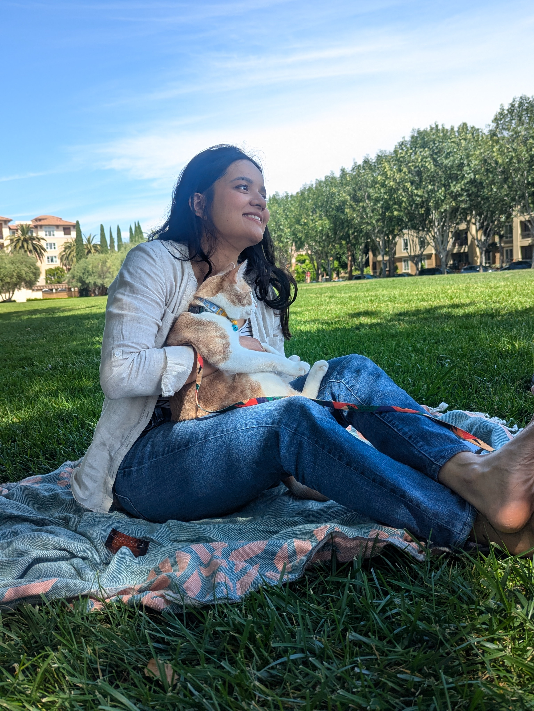

Research
Current Work
Selected Publications
Selected Conference Presentations
Skills and Expertise
Consulting & Teaching
Statistical Consulting
Student Feedback
Teaching
Mentorship & Peer Review
Contact
Get in touch!
Connect via LinkedIn

Loading…